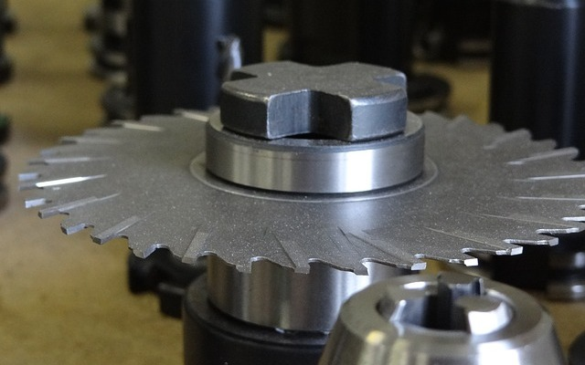
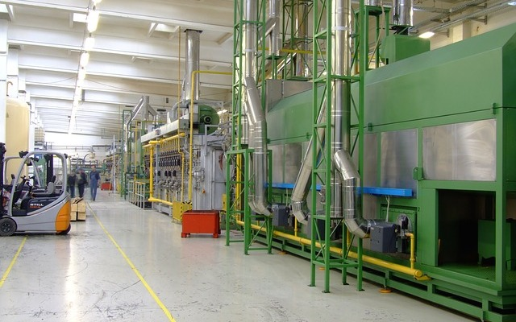

The New Way to success. advance. progress.
The Singapore Precision Engineering and Tooling Association (SPETA) is a trade association representing locally registered companies engaged in the manufacturing of moulds and dies, jigs and fixtures, metal stamping, metal castings, plastic and rubber moldings, precision machining, photonic and semi-conductor equipment, aerospace, automotive and medical parts as well as in providing services related to the precision engineering industry.
Founded in 1982 as the Singapore Tool and Die Association, it had changed its name to Singapore Precision Engineering and Tooling Association in 1988.


Our Mission
To marshal and assist with the development of resources and manpower skills essential to a sound and healthy Precision Engineering and Tooling industry to enhance its competitiveness and the economic development of Singapore. This is to be achieved through organising activities/ programmes to help members grow and broaden their market base and attain technological excellence.
To present to the government the views of Association members on matters affecting the total competence and competitiveness of the P.E. industry.
To promote an environment for close interactions and cooperation among members as well as with other trade and government agencies, to identify opportunities for strategic business development worldwide.


Management Council
The policy making body of SPETA is its management council which comprises a maximum of 20 elected members.
The management council is elected once every two years. The elected council members will elect office bearers, namely, Chairman, Deputy Chairman, Honorary Secretary and Honorary Treasurer.
The day-to-day running of the Association is handled by the full time secretariat headed by an Executive Director.
SPETA Management Council 2013-2015
Office Bearers
| Chairman | Fong Sun Fun, Jeremy | Fong's Engrg & Mfg Pte Ltd |
| Deputy Chairman | Low Ming Wah | Micro-Mechanics Pte Ltd |
| Deputy Chairman | Koh Gim Hoe, Steven | Armstrong Industrial Corp Ltd |
| Deputy Chairman | Kia Er Chew, Philip | Ichi Seiki Pte Ltd |
| Honorary Secretary | Choy Eng Soo, Gary | Fong Lee Metal Industries Pte Ltd |
| Honorary Treasurer | Steven Sim Swee Huat | Trend Singapore West Pte Ltd |
Council Members
| Lam Keng Yew | Onn Wah Precision Engrg Pte Ltd |
| Lim Meng Siang | Microcast Pte Ltd |
| Leow Pee Lip | Fong Shen Mould & Precision Engrg Pte Ltd |
| Dr Moh Chong Tau | Makino Asia Pte Ltd |
| Goh Juay How | GF Machining Solutions Pte Ltd |
| Lim Kwee Chuan, Esmond | PLC Industries Pte Ltd |
| Dr Ricky Souw Keng Hok | Sanwa Plastic Industry Pte Ltd |
| Tan Choon King, Peter | Fischer Tech Ltd |
| Loong Soo Min, Sam | Yangbum Engrg Pte Ltd |
| Tan Hwun Mong, Raymond | Swiss Precision Ind (Pte) Ltd |
| Ted Teo | Inmac Singapore Pte Ltd |
| Wu Yong Lin | VDL Enabling Technologies Group (S) Pte Ltd |
OUR ALLIANCES
Federation of Asian Die and Mould Association (FADMA)
List of FADMA Member Associations| CHINA | China Die & Mould Industry Association Shanghai Association of Die and Mould |
| INDIA | Tool & Gauge Manufacturers Association |
| INDONESIA | Indonesia Precision Tooling Industry Association |
| JAPAN | Japan Die & Mold Industry Association |
| KOREA | Korea Die & Mould Industry Cooperative |
| MALAYSIA | Malaysia Mould And Die Association |
| PHILIPPINES | Philippine Die And Mold Association, Inc. |
| SINGAPORE | Singapore Precision Engineering & Tooling Association |
| TAIWAN | Taiwan Mold & Die Industry Association |
| THAILAND | Thai Tool & Die Industry Association |
International Special Tooling & Machining Association (ISTMA)
The International Special Tooling & Machining Association (ISTMA) is an international association representing twenty-six special tooling and machining associations throughout the world. Collectively, ISTMA member associations represent over 8,000 companies and over $40 billion U.S. dollars in annual sales.
ISTMA National Secretaries| ISTMA Americas | |
| ARGENTINA | CAFHIM Camara Argentina Defabricantes de Herramientas e Instrumentos de Medicion |
| CANADA | Canadian Tooling & Machining Association (CTMA) Universal Pattern Co. Ltd |
| UNITED STATES | National Tooling & Machining Associations (NTMA) |
| ISTMA Europe | |
| BELGIUM | FABRIMETAL |
| FINLAND | Federation of Finish Metal Engineering & Electro-technical Industries |
| FRANCE | AFIM |
| GERMANY | VDMA |
| GREAT BRITAIN | The Gauge & Tool Maker’s Association (GTMA) |
| ITALY | Unione Costruttori Italiani Stampi e Attrezzature di Precisione (UCISAP) |
| THE NETHERLANDS | Groep Gereedschapmakers & Precisie Technologie (GG & PT) |
| PORTUGAL | Associacao Nacional da Industria de Moldes (CEFAMOL) |
| SLOVENIA | Gospodarska Zbornica Slovenije Chamber of Commerce & Industry of Slovenia Metal Processing Association |
| SPAIN | ASCAMM FEAMM |
| SWEDEN | Swedish Special Tooling Association (SSTA) |
| SWITZERLAND | Swissmem |
Our History
-

1988
Changed name to Singapore Precision Engineering and Tooling Association in 1988
-

1982
Founded in 1982 as the Singapore Tool and Die Association